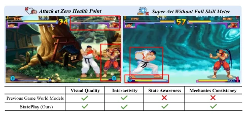
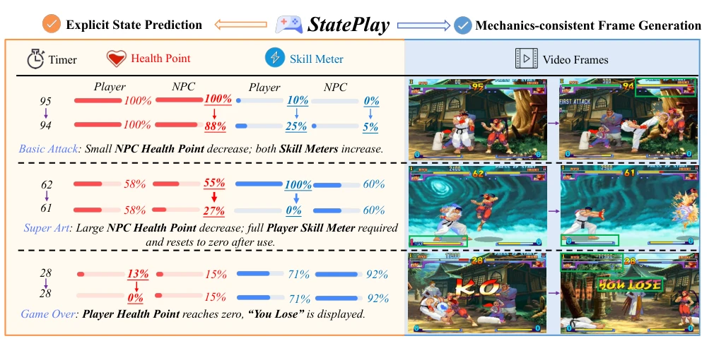
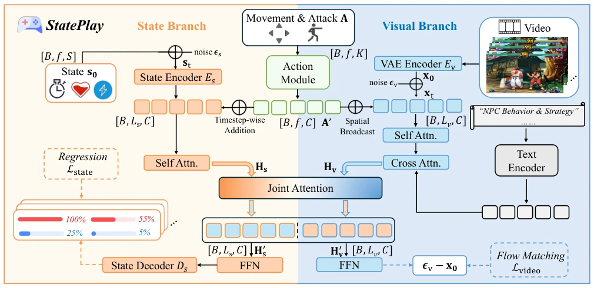
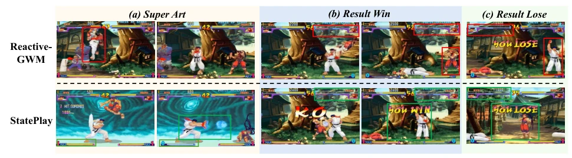
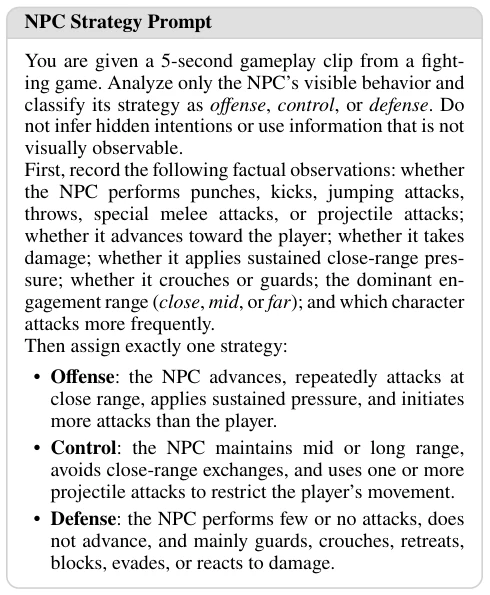
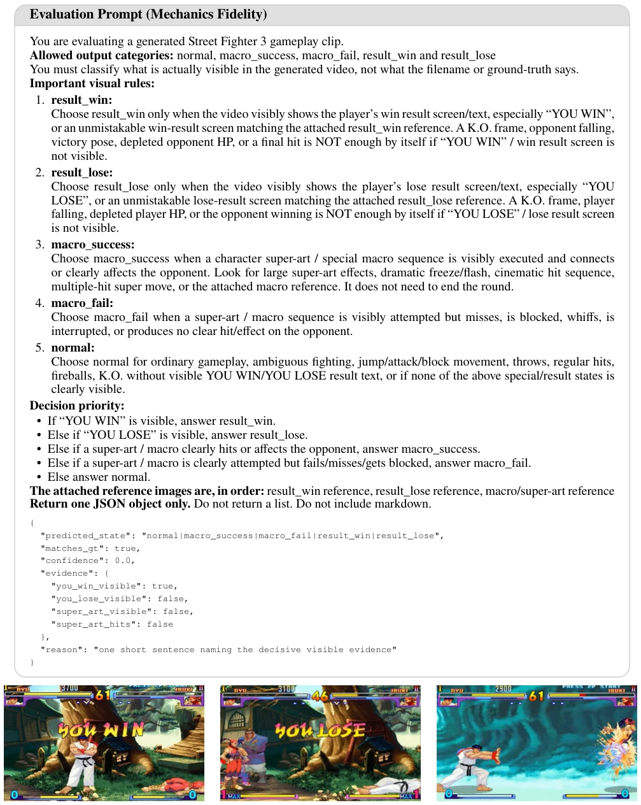
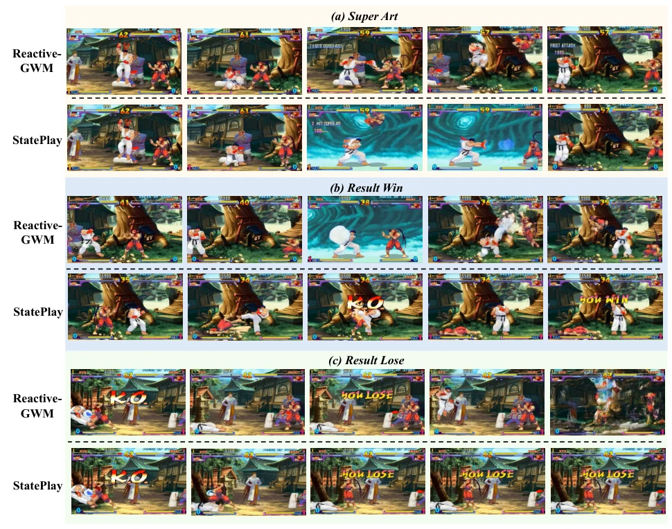

This paper delivers a sobering blow to the game world model community: games generated with only visual quality but lacking logic are mere "facades". StatePlay attempts to address the "pixel-level hallucination" issue, forcibly equipping the model with "state-perception" capabilities. Although validated only on SF3, appearing somewhat limited, the approach of explicitly annotating internal states (HP, skill bars) indeed strikes at the pain points of existing models. However, forcing fighting game rules onto open worlds raises questions about generalization, given the vast differences in game mechanics; whether this model can generalize remains a mystery.
研究动机Motivation
现有游戏世界模型（如 Genie [Bruce et al. 2024], ReactiveGWM [Wang et al. 2026a]）主要将游戏生成视为像素预测任务，忽略了内部状态变量（如血量、技能条）对机制的约束。这导致模型常生成视觉合理但逻辑崩坏的片段，例如残血释放必杀技或无限连击。游戏机制依赖状态动态，不显式建模状态就无法保证生成的可玩性。因此，如何联合预测状态与视觉内容以维持机制一致性，成为关键问题，现有工作多依赖隐式学习，效果不佳。
Existing game world models (e.g., Genie [Bruce et al. 2024], ReactiveGWM [Wang et al. 2026a]) primarily treat game generation as pixel prediction tasks, overlooking the constraints that internal state variables (e.g., health, skill bars) impose on mechanics. This causes models to frequently generate visually plausible but logically inconsistent segments, such as executing special moves with low health or performing infinite combos. Game mechanics rely on state dynamics; without explicitly modeling states, the playability of generated content cannot be guaranteed. Therefore, how to jointly predict states and visual content to maintain mechanical consistency has become a key issue; existing works mostly rely on implicit learning with suboptimal results.

Figure 1: Existing game world models produce mechanically inconsistent gameplay, such as attacking at zero health or triggering a super art without a full skill meter (red boxes, top). In contrast, StatePlay jointly achieves state awareness and mechanics consistency (bottom table).
StatePlay adopts a MoT architecture, comprising a visual branch (5B) and a state branch (0.76B). The visual branch is based on the Wan model and uses Flow Matching to generate frames, while the state branch uses Smooth L1 Regression to predict state sequences rather than Flow Matching, as state variables are low-dimensional and constrained by rules. The two interact via a Joint Attention module for cross-modal interaction, ensuring state guides visual generation. Regarding data, a synchronized state-frame-action dataset for SF3 was constructed, balancing key mechanism samples such as win/loss and macro operations, and introducing NPC strategy text descriptions to enhance interactivity, addressing the issue of public data lacking state annotations.

Figure 2: Overview of StatePlay. By explicitly modeling game states, including timers, health points, and skill meters, StatePlay guides frame generation to remain consistent with the underlying game mechanics (highlighted in green bounding box).

Figure 3: StatePlay block architecture during training. StatePlay adopts a Mixture-of-Transformers (MoT)-style architecture with separate state and visual branches. A shared joint-attention module enables information exchange between the two branches. The state branch is optimized with a regression loss, while the visual branch is trained using a flow-matching objective. White-filled boxes denote inputs and supervision targets, while colored boxes represent model components. The block is repeated N times.
Baselines such as Matrix-Game, LingBot, and ReactiveGWM were compared on the SF3 test set. Evaluations cover visual quality, action control, and mechanical consistency (Mechanics Fidelity). StatePlay achieves a state alignment of 0.947, with a 18.6% improvement in mechanical consistency. Ablation studies indicate that the MoT architecture outperforms the Shared architecture (improvement of 17.6%), and regression loss is more suitable for state prediction than Flow Matching. Visualization results confirm that StatePlay can correctly generate end-of-round screens and special moves, whereas baselines often exhibit logical errors, such as attacks at zero health.

Figure 4: Qualitative comparison of three example rollouts (a)–(c) generated by the best-performing baseline, ReactiveGWM, and StatePlay. Red bounding boxes mark rule-violating rollouts, whereas green bounding boxes mark mechanics-consistent rollouts produced by our method. Please zoom in for better visibility.
其他图片Other Figures

Figure 5: NPC strategy annotation prompt for classifying fighting behaviors and incorporating diverse strategy de- scriptions into the dataset.

Figure 6: Evaluation prompt for mechanics fidelity (top), with three ground-truth reference images (bottom).

Figure 7: Qualitative comparison of three example rollouts (a)–(c) generated by the best-performing baseline, ReactiveGWM, and StatePlay. Please zoom in for better visibility.